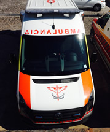
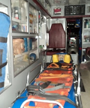
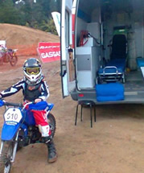

Traslado Sencillo
Servicio de ambulancia para pacientes incapacitados por enfermedad o accidente. No incluye equipo o atención detallada.
Traslados de Terapia Intermedia
Servicio de ambulancia en la que el paciente requiere atención no invasiva, con personal capacitado que va revisando el estado delicado del paciente. Incluye oxígeno, soluciones, monitor de signos vitales, oximetría.
Traslados de Terapia Intensiva
Servicio de ambulancia en la que el estado del paciente es grave y su tratamiento requiere de cuidados prolongados e intensivos. Se proporciona todo el equipo requerido, así como el personal y la atención médica necesarios
Traslados con Responsivas Médicas
Servicio de ambulancia que se solicita a través de un documento en el cual el médico se hace responsable de la atención del paciente, en donde certifica que va a trasladarse con el tratamiento correcto.
Traslados neonatales
Transportación especializada para el paciente en las primeras horas de vida extrauterina en ambulancia de cuidados intensivos neonatales.
Ambulancia neonatal equipada con incubadora, ventilador neonatal, bombas de infusión, monitores de signos vitales multiparámetros, sistemas de administración de oxígeno.
Traslado Aéreo
Eventos especiales
Cubrimos la parte de seguridad, protección civil y servicio médico que requieren los grandes eventos culturales, sociales y deportivos, así como los parques de diversión, centros recreativos y de esparcimiento, y las locaciones de filmación; es decir, desde conciertos, congresos, exposiciones, competencias y grandes banquetes, hasta grabaciones de programas televisivos, películas y comerciales.
AMBULANCIAS


